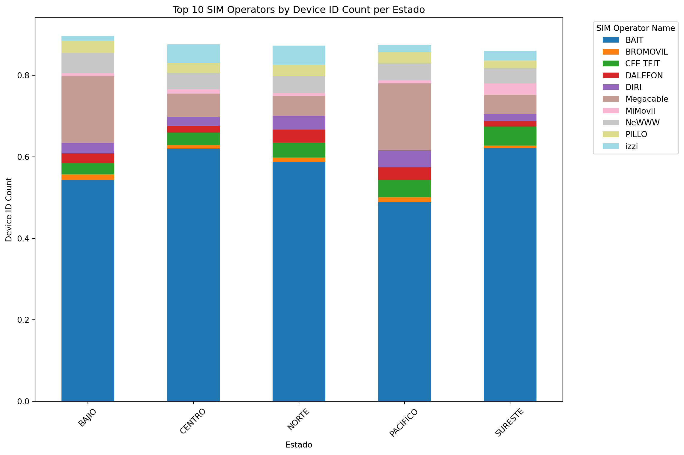
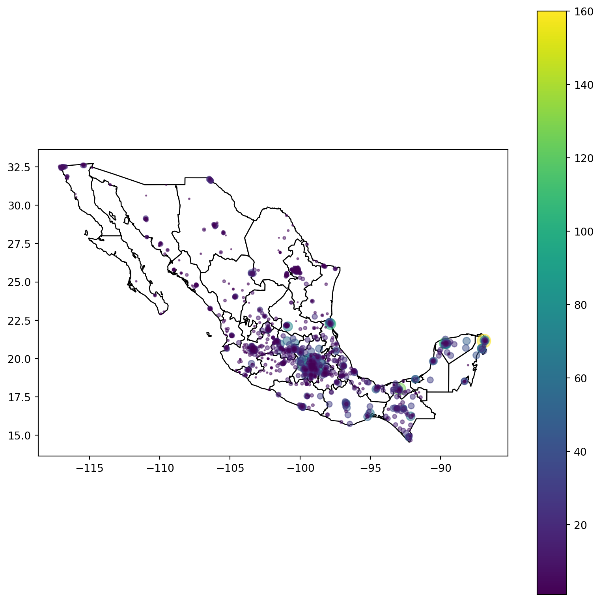
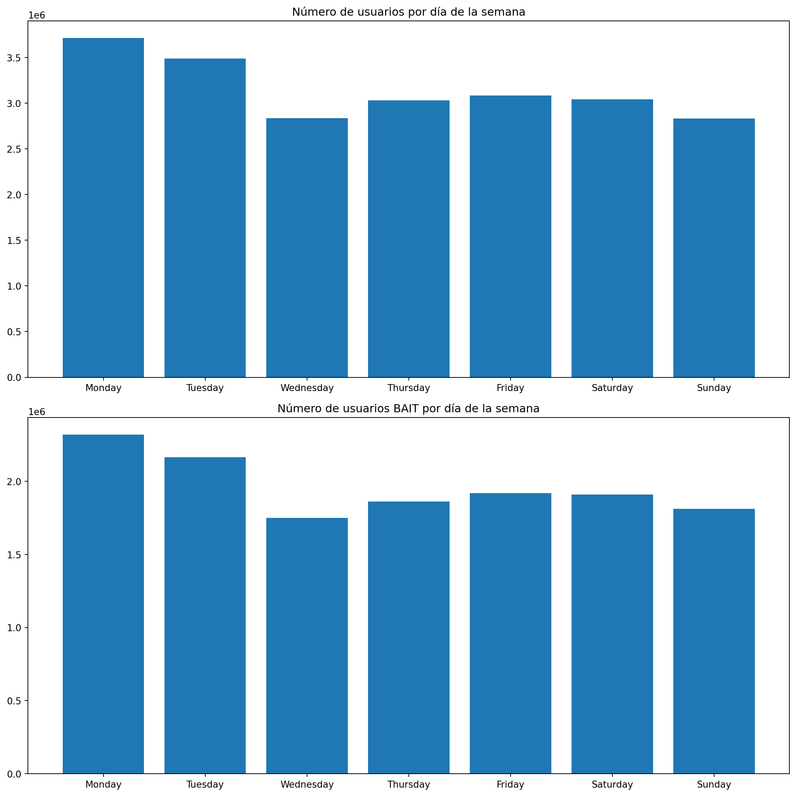

import pandas as pdimport numpy as npimport matplotlib.pyplot as pltimport seaborn as snsimport geopandas as gpdfrom shapely import wkbfrom dotenv import load_dotenvimport awswrangler as wrimport osimport yamlimport boto3from IPython import display as ICDimport plotly.express as px"""Connect to AWS"""# load environment variables withload_dotenv()# import configwithopen("../config.yaml") as f: config = yaml.safe_load(f)# connect to AWS with credentialsAWS_ACCESS_KEY_ID = os.getenv("AWS_ACCESS_KEY_ID")AWS_SECRET_ACCESS_KEY = os.getenv("AWS_SECRET_ACCESS_KEY")AWS_REGION = os.getenv("REGION")BUCKET = os.getenv("BUCKET")FOLDER = config["aws"]["folder"]# connect to AWSsession = boto3.Session( aws_access_key_id=AWS_ACCESS_KEY_ID, aws_secret_access_key=AWS_SECRET_ACCESS_KEY, region_name=AWS_REGION)s3 = session.client("s3")"""Extract the data"""# get users data from S3gdf_users = ( wr.s3.read_parquet(f"s3://{BUCKET}/{FOLDER}/{config['aws']['users-file']}" ) .rename(columns={"client_latitude": "latitude", "client_longitude": "longitude"})# convert to GeoDataFrame .pipe(gpd.GeoDataFrame) .assign( geometry=lambda x: gpd.points_from_xy(x['longitude'], x['latitude']) ) .set_crs(epsg=4326))# Eliminate invalid values of raw_sim_operator_namegdf_users = gdf_users[~gdf_users["raw_sim_operator_name"].isin(["TELCEL", "Solo llamadas de emergencia", "Sin servicio", "AT&T", "ALTAN"])]# Standarize the name of Megacablegdf_users.loc[gdf_users["raw_sim_operator_name"].isin(["Mega 4.5G", "Mega4.5G"]),"raw_sim_operator_name"] ="Megacable"# download shapefile of statesgdf_states = ( wr.s3.read_parquet("s3://itam-analytics-javier/telecom-outputs/mexico_states.parquet" )# pass geometry column from binary to geometry .assign(geometry=lambda x: x['geometry'].apply(wkb.loads)) .pipe(gpd.GeoDataFrame) .set_crs(epsg=4326) .rename(columns={"CODIGO": "cve_ent", "ESTADO": "cve_name"}) .assign( cve_ent=lambda x: x['cve_ent'].str[-2:], cve_name=lambda x: x['cve_name'].str.lower() ) .sort_values('cve_ent', ignore_index=True))# get data of walmart storesre_walmart =r"(walmart|wal mart|superama|waltmart)"re_sams =r"(sams|sam's|sam s|sam's club|sam s club|sam'sclub|sam sclub|sam club|mi bodega)"re_bodega =r"(bodega aurrera|bodega|aurrera|ba|boa|\$b|mb|b )"re_supercenter =r"(supercenter|super center)"gdf_walmart = ( wr.s3.read_csv(f"s3://{BUCKET}/{FOLDER}/{config['aws']['walmart-file']}" ) .assign( geometry=lambda x: gpd.points_from_xy(x['longitude'], x['latitude']),# get bodega aurrera or walmart or sams in name store_name=lambda x: np.select( [ x['name'].str.contains(re_bodega, case=False), x['name'].str.contains(re_walmart, case=False), x['name'].str.contains(re_sams, case=False), x['name'].str.contains(re_supercenter, case=False) ], ['bodega aurrera', 'walmart', 'sams', 'supercenter'], default='other' ) ) .pipe(gpd.GeoDataFrame, crs="EPSG:4326") .query("store_name != 'other'") .loc[:, ['id', 'store_name', 'name', 'staff_stratum_description','postal_code', 'cve_ent', 'cve_mun', 'geometry' ]])# get connections data from S3gdf_connections = ( wr.s3.read_parquet(f"s3://{BUCKET}/{FOLDER}/{config['aws']['connections-file']}" ))# Obtain the day of the week of each testgdf_connections['day_of_week'] = gdf_connections['result_date'].dt.day_name()
c:\Users\javie\miniconda3\Lib\site-packages\pandas\core\frame.py:5226: FutureWarning:
You are adding a column named 'geometry' to a GeoDataFrame constructed without an active geometry column. Currently, this automatically sets the active geometry column to 'geometry' but in the future that will no longer happen. Instead, either provide geometry to the GeoDataFrame constructor (GeoDataFrame(... geometry=GeoSeries()) or use `set_geometry('geometry')` to explicitly set the active geometry column.
C:\Users\javie\AppData\Local\Temp\ipykernel_24584\598198741.py:97: UserWarning:
This pattern is interpreted as a regular expression, and has match groups. To actually get the groups, use str.extract.
C:\Users\javie\AppData\Local\Temp\ipykernel_24584\598198741.py:98: UserWarning:
This pattern is interpreted as a regular expression, and has match groups. To actually get the groups, use str.extract.
C:\Users\javie\AppData\Local\Temp\ipykernel_24584\598198741.py:99: UserWarning:
This pattern is interpreted as a regular expression, and has match groups. To actually get the groups, use str.extract.
C:\Users\javie\AppData\Local\Temp\ipykernel_24584\598198741.py:100: UserWarning:
This pattern is interpreted as a regular expression, and has match groups. To actually get the groups, use str.extract.
Participación de mercado
Code
"""Data preprocessing"""# join users with statestbl_users_state = ( gpd.sjoin_nearest( gdf_users.to_crs("EPSG:6372"), gdf_states.to_crs("EPSG:6372"), ) .drop_duplicates(subset=["device_id"]) .filter(["device_id", "postal_code", "raw_sim_operator_name", "cve_name"]))# Define the dictionaryzonas_nielsen = {"BAJIO": ["aguascalientes", "jalisco", "guanajuato", "colima", "michoacán"],"PACIFICO": ["baja california", "baja california sur", "sinaloa", "sonora", "nayarit"],"NORTE": ["chihuahua", "coahuila", "durango", "nuevo león", "san luis potosí", "tamaulipas", "zacatecas"],"SURESTE": ["campeche", "chiapas", "oaxaca", "quintana roo", "tabasco", "veracruz", "yucatán"],"CENTRO": ["distrito federal", "guerrero", "hidalgo", "méxico", "morelos", "puebla", "querétaro", "tlaxcala"]}# Map the states to their corresponding regionstbl_users_state['region'] = ( tbl_users_state['cve_name'] .map(lambda x: next((region for region, states in zonas_nielsen.items() if x.lower() in states),None)))# Group by 'raw_sim_operator_name' and count 'device_id', then sort and get the top 10operadores = ( tbl_users_state .groupby(["raw_sim_operator_name"])['device_id'] .count() .sort_values(ascending=False) .head(n=10))operadores = operadores.reset_index()# Obtain the name of the operators of interestoperadores = operadores["raw_sim_operator_name"]# Group by 'raw_sim_operator_name' and count 'device_id'gdf_top_operador = tbl_users_state.groupby(["raw_sim_operator_name", "region"])['device_id'].count()# Convert the Series to a DataFramegdf_top_operador = gdf_top_operador.reset_index()# Rename columns for claritygdf_top_operador.columns = ['raw_sim_operator_name', "region", 'device_id_count']# Obtain the total number of users per regiontotales = gdf_top_operador.groupby("region")["device_id_count"].aggregate(usuarios_region ="sum")totales = totales.reset_index()# Select only the 10 top operatorsgdf_top_operador = gdf_top_operador[gdf_top_operador['raw_sim_operator_name'].isin(operadores)]# Merge with the table of totalesgdf_top_operador = ( gdf_top_operador.merge( totales, on="region", how="left"))# Obtain the participacion_mercado per regiongdf_top_operador["participacion_mercado"] = gdf_top_operador["device_id_count"]/ gdf_top_operador["usuarios_region"]# Pivot the DataFrame for the stacked bar chartpivot_df = gdf_top_operador.pivot(index='region', columns='raw_sim_operator_name', values='participacion_mercado')# Fill NaN values with 0pivot_df = pivot_df.fillna(0)# Plotting the stacked bar chartpivot_df.plot(kind='bar', stacked=True, figsize=(12, 8), colormap='tab20')# Adding labels and titleplt.xlabel('Estado')plt.ylabel('Device ID Count')plt.title('Top 10 SIM Operators by Device ID Count per Estado')plt.legend(title='SIM Operator Name', bbox_to_anchor=(1.05, 1), loc='upper left')# Rotate x-axis labels for better readabilityplt.xticks(rotation=45)# Display the plotplt.tight_layout()plt.show()

Presencia nacional
Code
# Select only BAIT usersgdf_bait_users = gdf_users[gdf_users["raw_sim_operator_name"]=="BAIT"]# join users with stores getting the closest storegdf_clients_stores = ( gpd.sjoin_nearest( gdf_bait_users.to_crs("EPSG:6372"), gdf_walmart.to_crs("EPSG:6372"), ) .drop_duplicates(subset=["device_id"]) .groupby(["name", "store_name", "id", "cve_ent", "cve_mun"]) # denue_id is the store id .agg( count=("device_id", "count") ) .reset_index() .sort_values("count", ascending=False) .merge( gdf_walmart.loc[:, ["id", "geometry"]], on="id", how="left" ) .pipe(gpd.GeoDataFrame) .set_crs(epsg=4326))# plot states with count of usersfig, ax = plt.subplots(figsize=(10, 10))gdf_states.plot(ax=ax, color='white', edgecolor='black')gdf_clients_stores.plot( ax=ax, markersize=gdf_clients_stores['count'], column='count', legend=True, cmap='viridis', alpha=0.5)

Análisis de tiendas por region
Code
# join users with statesgdf_clients_stores_region = ( gpd.sjoin_nearest( gdf_clients_stores.to_crs("EPSG:6372"), gdf_states.to_crs("EPSG:6372"), ))# Map the states to their corresponding regionsgdf_clients_stores_region['region'] = ( gdf_clients_stores_region['cve_name'] .map(lambda x: next((region for region, states in zonas_nielsen.items() if x.lower() in states),None)))# Function to print the top 5 and bottom 5 per regiondef top_bottom(region): stores = (gdf_clients_stores_region[gdf_clients_stores_region["region"]==region] .sort_values("count", ascending=False) )[["name", "store_name","cve_name","count"]] stores.columns = ["Nombre", "Formato", "Estado", "Clientes_reales"] ICD.display(f"Top 5 tiendas {region}") ICD.display(stores.head(n=5)) ICD.display(f"Bottom 5 tiendas {region}") ICD.display(stores.tail(n=5))for zone in zonas_nielsen: top_bottom(zone)print("\n")
'Top 5 tiendas BAJIO'
Nombre
Formato
Estado
Clientes_reales
28
MI BODEGA PLUTARCO ELIAS CALLES 1729
bodega aurrera
guanajuato
59
32
BODEGA SILAO 2038
bodega aurrera
guanajuato
58
31
BODEGA ALFREDO JIMENEZ 1422
bodega aurrera
guanajuato
58
96
BA EXPRESS ESTANCIA 3559
bodega aurrera
guanajuato
38
106
BA EXPRESS PARQUES TESISTAN 3334
bodega aurrera
jalisco
37
'Bottom 5 tiendas BAJIO'
Nombre
Formato
Estado
Clientes_reales
2365
MI BODEGA ATOTONILCO 1163
bodega aurrera
jalisco
1
2361
BODEGA AURRERA EXPRESS 3576
bodega aurrera
jalisco
1
2358
B JARDINES COLON 2868
bodega aurrera
jalisco
1
2354
BODEGA TALA RUISENORES 2999
bodega aurrera
jalisco
1
2470
SAM S AGUASCALIENTES 8118
sams
aguascalientes
1
'Top 5 tiendas PACIFICO'
Nombre
Formato
Estado
Clientes_reales
300
SUPERCENTER TIJUANA 2000 4155
supercenter
baja california
24
334
BODEGA HERMOSILLO NORTE 1034
bodega aurrera
sonora
23
368
BODEGA AV MEXICO II 2112
bodega aurrera
nayarit
22
407
BODEGA MEXICALI SUR 1417
bodega aurrera
baja california
21
440
BA EXPRESS VENADOS 2980
bodega aurrera
sinaloa
20
'Bottom 5 tiendas PACIFICO'
Nombre
Formato
Estado
Clientes_reales
2418
BODEGA AGUA PRIETA 4068
bodega aurrera
sonora
1
2391
MB SALTILLO CENTRO 2983
bodega aurrera
sinaloa
1
2368
MI BODEGA JAVIER MINA 5675
bodega aurrera
baja california
1
2355
MI BODEGA AURRERA VILLA NAYARIT 3570
bodega aurrera
nayarit
1
2472
SUPERCENTER NOVENA 1617
supercenter
baja california
1
'Top 5 tiendas NORTE'
Nombre
Formato
Estado
Clientes_reales
4
SUPERCENTER CD MADERO 4025
supercenter
tamaulipas
105
9
BA EXPRESS POZOS 2972
bodega aurrera
san luis potosí
76
10
BODEGA MULTIPLAZA REAL 3073
bodega aurrera
tamaulipas
75
66
BOA ALTAMIRA 2457
bodega aurrera
tamaulipas
45
108
BODEGA RINCON SN ANTONIO 3019
bodega aurrera
durango
36
'Bottom 5 tiendas NORTE'
Nombre
Formato
Estado
Clientes_reales
2394
BODEGA ESCOBEDO 3298
bodega aurrera
nuevo león
1
2397
BA EXPRESS HACIENDA MAGDALENA 2845
bodega aurrera
nuevo león
1
2399
BA EXPRESS COLONIA LOS GONZALEZ 5699
bodega aurrera
coahuila
1
2400
SUPERCENTER SAN NICOLAS 6204
supercenter
nuevo león
1
2474
SUPERCENTER PARRAL 1170
supercenter
chihuahua
1
'Top 5 tiendas SURESTE'
Nombre
Formato
Estado
Clientes_reales
0
BODEGA AURRERA NAHIL 2476
bodega aurrera
quintana roo
160
1
BODEGA CIUDAD INDUSTRIAL 1101
bodega aurrera
tabasco
127
3
BODEGA GLORIETA CAUCEL 3295
bodega aurrera
yucatán
112
8
BODEGA AURRERA
bodega aurrera
yucatán
78
11
BODEGA VILLAS OTOCH 1665
bodega aurrera
quintana roo
75
'Bottom 5 tiendas SURESTE'
Nombre
Formato
Estado
Clientes_reales
2437
SAM S PLAYA NORTE 6209
sams
veracruz
1
2440
MI BODEGA TUXTLA CHICO 1230
bodega aurrera
chiapas
1
2447
MI BODEGA PEROTE 2085
bodega aurrera
veracruz
1
2454
MI BODEGA LOMA BONITA 1615
bodega aurrera
oaxaca
1
2461
BODEGA AURRERA
bodega aurrera
oaxaca
1
'Top 5 tiendas CENTRO'
Nombre
Formato
Estado
Clientes_reales
2
MI BODEGA IXTLAHUACA 1194
bodega aurrera
méxico
114
5
BODEGA SAN BUENAVENTURA 1001
bodega aurrera
méxico
100
6
BODEGA PEDRO RAMIREZ 1853
bodega aurrera
distrito federal
97
7
BODEGA XONACATLAN 2141
bodega aurrera
méxico
79
12
MI BODEGA JILOTEPEC 3047
bodega aurrera
méxico
74
'Bottom 5 tiendas CENTRO'
Nombre
Formato
Estado
Clientes_reales
2376
BODEGA AURRERA EXPRESS LA ARENA VELADERO 3994
bodega aurrera
guerrero
1
2375
BODEGA AURRERA EXPRESS TEPANTONGO
bodega aurrera
méxico
1
2369
TIENDAS WALMART
walmart
méxico
1
2364
SUPERCENTER SANTA ELENA 1423
supercenter
méxico
1
2475
BODEGA VILLAS DE LA HACIENDA 3074
bodega aurrera
méxico
1
Análisis temporal
Distribución de usuarios por día de la semana
Code
# Obtain the number of users per day of the weekpotential_users = (gdf_connections.groupby("day_of_week") .agg( count=("device_id", "count") ) .reset_index())# Sort the rows by day of the weeksorted_weekdays = ['Monday', 'Tuesday', 'Wednesday', 'Thursday', 'Friday', 'Saturday', 'Sunday']potential_users['day_of_week'] = pd.Categorical(potential_users['day_of_week'], sorted_weekdays)potential_users = potential_users.sort_values("day_of_week")# Obtain the number of BAIT users per day of the weekreal_users = (gdf_connections[gdf_connections["raw_sim_operator_name"]=="BAIT"] .groupby("day_of_week") .agg( count=("device_id", "count") ) .reset_index())# Sort the rows by day of the weekreal_users['day_of_week'] = pd.Categorical(real_users['day_of_week'], sorted_weekdays)real_users = real_users.sort_values("day_of_week")fig, axes = plt.subplots(2, 1, figsize=(12, 12))# First plotaxes[0].bar(potential_users['day_of_week'], potential_users['count'])axes[0].set_title('Número de usuarios por día de la semana')# Second plotaxes[1].bar(real_users['day_of_week'], real_users['count'])axes[1].set_title('Número de usuarios BAIT por día de la semana')# Adjust layoutplt.tight_layout()# Display the plotsplt.show()

Tienda A
Code
def store_user_analysis(PC):# User analysis for a store with PC (Postal Code)# Analyze the potential users of the store store_potential_users = (gdf_connections[gdf_connections["postal_code"]==PC] .groupby("day_of_week") .agg( count=("device_id", "count") ) .reset_index() )# Sort the rows by day of the week store_potential_users['day_of_week'] = (pd .Categorical(store_potential_users['day_of_week'], sorted_weekdays) ) store_potential_users = store_potential_users.sort_values("day_of_week")# Analyze the real users of the store store_real_users = (gdf_connections[ (gdf_connections["raw_sim_operator_name"]=="BAIT") & (gdf_connections["postal_code"]==PC) ] .groupby("day_of_week") .agg( count=("device_id", "count") ) .reset_index() )# Sort the rows by day of the week store_real_users['day_of_week'] = (pd .Categorical(store_real_users['day_of_week'], sorted_weekdays) ) store_real_users = store_real_users.sort_values("day_of_week")# Comparison of potential users and real users fig, axes = plt.subplots(2, 1, figsize=(12, 12))# Distribution of the number of users per day of the week axes[0].bar(store_potential_users['day_of_week'], store_potential_users['count']) axes[0].set_title('Número de usuarios por día de la semana')# Distribution of the number of BAIT users per day of the week axes[1].bar(store_real_users['day_of_week'], store_real_users['count']) axes[1].set_title('Número de usuarios BAIT por día de la semana')# Adjust layout plt.tight_layout()# Display the plots plt.show()# Obtain the number of BAIT clients per store based in their PCBAIT_users_per_store = (gdf_clients_stores_region.sort_values("count", ascending=False) )[["name", "store_name","cve_name","count"]]BAIT_users_per_store.columns = ["Nombre", "Formato", "Estado", "Clientes_reales"]# Obtain the postal code of the most and less crowded storecp_top =str(gdf_walmart[gdf_walmart["name"]==BAIT_users_per_store.head(n=1)["Nombre"][0]].postal_code.iloc[0])cp_bottom =str(gdf_walmart[gdf_walmart["name"]==BAIT_users_per_store.tail(n=1)["Nombre"].iloc[0]].postal_code.iloc[0])# User analysis for the most crowded storestore_user_analysis(cp_top)
Tienda B
Code
# User analysis for the less crowded storestore_user_analysis(cp_bottom)